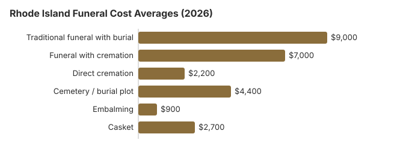

Funeral Costs in Rhode Island: What Families Pay in 2026
Our 2026 model puts a traditional Rhode Island funeral with burial at about $9,000, 8% above the $8,300 national median, with individual quotes from roughly $6,750 to $11,700. Cremation with a service runs near $7,000 and direct cremation near $2,200, and 58% of Rhode Island families now cremate. Because the state has no county government, all public burial help comes from the state; this page covers that program, death certificates and the Rhode Island timing rules.
Funeral Cost Breakdown in Rhode Island
These are our item-by-item Rhode Island estimates. The Department of Health licenses homes; it does not set their prices.
| Item | About | Quotes run |
|---|---|---|
| Traditional funeral with burial | $9,000 | $6,750 – $11,700 |
| Funeral with cremation | $7,000 | $5,600 – $9,100 |
| Direct cremation | $2,200 | $1,540 – $3,080 |
| Cemetery / burial plot | $4,400 | $2,200 – $8,800 |
| Embalming | $900 | $500 – $1,500 |
| Casket | $2,700 | $900 – $7,200 |
A note on method: we modeled these Rhode Island numbers; nobody phoned homes in the state for them, so read them as a guide and never as a quote or advice. Our estimating method and disclaimer say more.
State sources: Board of Funeral Directing/Embalming at the Rhode Island Department of Health; R.I. Gen. Laws § 40-6-3.10; 218-RICR-20-00-3; R.I. Gen. Laws §5-33.2-12; §5-33.2-9.

What Pushes a Rhode Island Funeral Bill Up or Down
Rhode Island, like the rest of the Northeast, runs over the $8,300 national median, and a Providence-area home will usually quote 10-30% more than one in a smaller town.
With 58% of families cremating, Rhode Island has enough cremation-only providers to keep direct cremation prices competitive.
Lower-Cost Rhode Island Funerals
| Choice | Typical cost | What it covers |
|---|---|---|
| Direct cremation | $2,200 | Collection, cremation and the ashes returned, at least 24 hours after death. |
| Direct burial | $4,500 | Skips embalming and viewing; a Rhode Island cemetery invoices plot and opening on its own. |
| Green burial | $4,950 | A shroud or plain casket with no embalming, where a Rhode Island cemetery allows it. |
| Cremation + memorial | $7,000 | Cremation with a later memorial |
| Traditional funeral | $9,000 | Viewing, funeral service, burial |
Providence and Other Rhode Island Cities
Providence, Warwick, Cranston and Pawtucket each have their own price level; our city estimates:
Rhode Island Extras
Look for these on a Rhode Island bill.
- Embalming called mandatory. Refrigeration meets the 48-hour rule instead.
- Cemetery "perpetual care" fees: An ongoing maintenance charge, typically $200–$1,000, added on top of the $4,400 Rhode Island plot price.
- "Package" markups: Bundled packages often include services you don't need; under the FTC Funeral Rule a Rhode Island funeral home must also price each item separately.
Federal Rules in Rhode Island
Report breaches of the federal rule at ftc.gov; the Funeral Consumers Alliance advises Rhode Island families for free.
Help Paying in Rhode Island
- Because Rhode Island has no county government, there is no county office to try first; GPA-Burial at the state Department of Human Services is the place to apply.
- Funeral homes in Rhode Island usually report the death to Social Security, but the $255 lump sum still has to be claimed by the spouse or child (1-800-772-1213, within two years).
- Whoever paid for a veteran's funeral in Rhode Island can file VA Form 21P-530EZ; if the death was not service-connected and came on or after October 1, 2026, VA will pay as much as $1,032 toward burial plus $1,032 toward a plot (see our veteran burial benefits guide).
- Medicaid, charities and other sources of help are covered in our payment assistance guide and funerals with no money page.
Educational Resources
- Funeral Consumers AllianceIndependent nonprofit consumer advocacy for funeral rights
- FTC Funeral RuleThe federal rule protecting funeral consumers
- Funeral Insurance GuideCompare final expense and burial insurance options
- Best Burial Insurance CompaniesSide-by-side comparison of top burial insurance providers
- Payment Assistance GuideGovernment programs and financial help for funeral costs
- Insurance Plan ComparisonCompare coverage, premiums, and payout speed across providers
Compare Funeral Costs
- Average Funeral Cost in 2026National cost breakdown with real prices
- Cremation vs. Burial Cost ComparisonSide-by-side price comparison to help you decide
- Funeral Cost BreakdownEvery line item explained: know what you're paying for
- Cheapest Funeral OptionsLower-cost alternatives, with typical price ranges
- Direct Cremation: Most Affordable OptionNFDA 2023 median $2,645 with a family-supplied container (latest available)
- How to Compare Funeral PricesStep-by-step guide to getting the best price
Winter Burials in Rhode Island
Winter timing affects Northeastern funerals more than most families expect; cemetery interment can be delayed in Rhode Island between December and March, which sometimes shifts the cost structure toward cremation with later interment or memorial.
Rhode Island Cremation and Burial Pages
Each option in detail:
Cremation Costs in Rhode Island
58% of Rhode Island families cremate. Prices start near $2,200 for direct cremation and reach about $7,000 with a service; urns and scattering rules are covered too.
Burial Costs in Rhode Island
Plot from about $4,400, then casket, vault, stone and opening: $20,560-$25,060 for a Rhode Island burial.
Rhode Island: Cremation Versus Burial
Cremation
- Direct cremation from roughly $2,200
- Roughly $7,000 when a service comes first
- No cemetery plot
- Ashes kept or scattered
- 58% of Rhode Island families
Traditional Burial
- Funeral about $9,000
- Plot about $4,400
- Liner or vault usually required
- A permanent grave
- Metal casket: the NFDA 2023 General Price List Study puts the national figure near $2,500, though Rhode Island homes vary
Planning a Rhode Island Funeral
- Settle burial or cremation: cremation in Rhode Island or burial in Rhode Island.
For the steps after a death in Rhode Island, see our what to do when someone dies guide or printable funeral planning checklist.
Rhode Island death certificates: $22 in person, $18 for extras
At the Department of Health's Center for Vital Records, the first certified death certificate costs $22 in person or $25 by mail, and each extra copy bought the same day is $18 (RIDOH, requesting a vital record; checked October 29, 2026). Rush handling adds $7.
- In person: Simpson Hall, 6 Harrington Road, Cranston, open 7:30 a.m. to 3:30 p.m. on weekdays. Appointments are suggested, and cash, checks and cards are accepted.
- By mail or drop box: same address; enclose a copy of photo ID and pay by check or money order made out to "General Treasurer, State of Rhode Island". Mailed orders take four to six weeks; rush orders five to seven business days.
- City and town halls: the clerk in the city or town where the death occurred charges the same fees and is often quicker for a recent death. Some add a card surcharge.
- Who may order: the spouse, children and grandchildren, parents, siblings, attorneys, the funeral director, and anyone who needs the record to protect a personal or property right.
Since extras are $18 each, four certificates bought together in person cost $76. The funeral home usually orders the first set when it files the record.
Rhode Island's funeral board, state burial aid and the veterans cemetery
The Board of Funeral Directing/Embalming at the Rhode Island Department of Health licenses homes and directors; call 401-222-4998 if a home will not show prices or pushes extras.
Rhode Island is not one of the nine states on the Funeral Consumers Alliance list that require a funeral director for parts of after-death care, so a family may take on much of it as long as someone files the death certificate and obtains the disposition permit. No cremation may happen within 24 hours of death (R.I. Gen. Laws § 23-3-18).
GPA-Burial from the state
With no counties, the safety net is the Department of Human Services General Public Assistance burial program. It pays up to $900 toward the funeral, plus fixed cemetery amounts of $150 for a lot, $175 for opening the grave and $125 for a required liner, if the family applies within 30 days of the death (R.I. Gen. Laws § 40-6-3.10). (Source: R.I. Gen. Laws § 40-6-3.10; 218-RICR-20-00-3.) Social Security's $255 death payment is a separate matter: a surviving spouse or child applies for it within two years, and it is never paid to the home.
Rhode Island Veterans Memorial Cemetery
Rhode Island has no national cemetery, so veterans are usually buried at the state's Veterans Memorial Cemetery in Exeter (401-268-3088). Families apply there directly, and the VA provides the headstone or marker free.
Rhode Island steps
- Get each Rhode Island home's General Price List in hand; it must give one when you visit.
- Think about a memorial after cremation or burial instead of a viewing, which drops embalming.
- Apply for GPA-Burial within 30 days; DHS pays the providers directly.
- For a veteran, call the Exeter cemetery first; a grave there can make a private plot unnecessary.
- Take any price-list complaint to the board at 401-222-4998.
Frequently Asked Questions
How much is a Rhode Island funeral today?
Plan on about $9,000 for a traditional Rhode Island funeral, 8% over the $8,300 national median. A service with cremation is about $7,000 and direct cremation from about $2,200, and burial adds roughly $4,400 in cemetery costs.
How much does cremation save in Rhode Island?
Yes. Direct cremation near $2,200 saves roughly $6,800 against the $9,000 traditional funeral; add the $4,400 or so a Rhode Island cemetery charges and the saving grows to about $11,200.
What rights do Rhode Island families have when arranging a funeral?
Rhode Island's funeral statute, R.I. Gen. Laws §5-33.2-12, says remains may not be held longer than 48 hours unless they are embalmed or refrigerated, so a delayed service means paying for one or the other. Each establishment must name one funeral director of record, and licenses run to December 31. A separate section, §5-33.2-9, keeps cemetery operators out of funeral directing and bars a funeral home on or beside cemetery grounds, which keeps the two price lists separate. The FTC Funeral Rule still applies on top. Complaints go to the Rhode Island Department of Health, Board of Funeral Directing/Embalming (401-222-4998).
How can a Rhode Island family pay less?
Three moves cut the most: compare at least three Rhode Island General Price Lists side by side before choosing a provider, strip packages down to only the services you actually want, and choose direct cremation ($2,200) if cost is the priority. Request frozen-ground pricing separately if the death is between December and March; Rhode Island cemeteries often charge extra in winter. Municipal, Catholic, and Jewish cemeteries in Rhode Island generally price below private memorial parks by $1,000 or more. Then confirm Rhode Island eligibility for veteran, Medicaid, and Social Security survivor benefits.
Is embalming required in Rhode Island?
Only in limited cases. The Department of Health's rule (216-RICR-40-05-25.5.6) bars holding a body more than 48 hours without embalming or refrigeration, and one shipped by common carrier has to be embalmed, or sealed in a strong outer case when embalming cannot be done.
Rhode Island's Board of Funeral Directing/Embalming, part of the Department of Health (401-222-4998), licenses the people who perform it; on this page's Rhode Island estimate, embalming runs about $900 when a family chooses it.
Is Rhode Island above the national average?
Somewhat more expensive. Set this page's Rhode Island table against the national medians of $8,300 for a funeral with viewing and burial, or $6,280 with cremation (NFDA 2023); the price lists you collect still matter more than any average.
What is the cheapest Rhode Island funeral?
Direct cremation carries the lowest price tag in Rhode Island, from roughly $2,200. Direct burial is the next step up at about $4,500, which is $4,500 below a traditional Rhode Island funeral.
How do I find lower-cost Rhode Island funeral homes?
Call several Rhode Island homes; each one is required to give prices over the phone. If you buy a casket or urn somewhere else, the home has to accept it with no added fee.